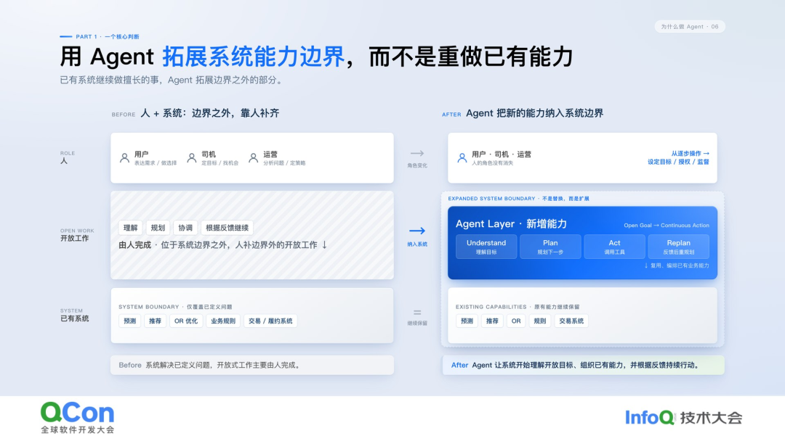
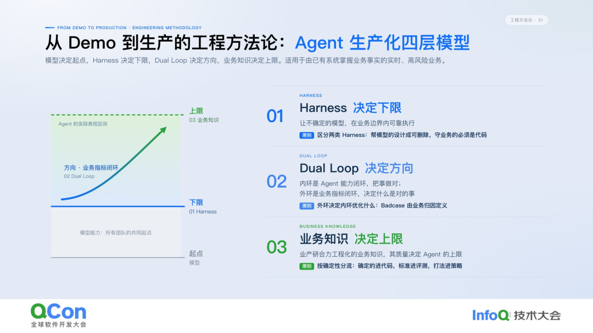
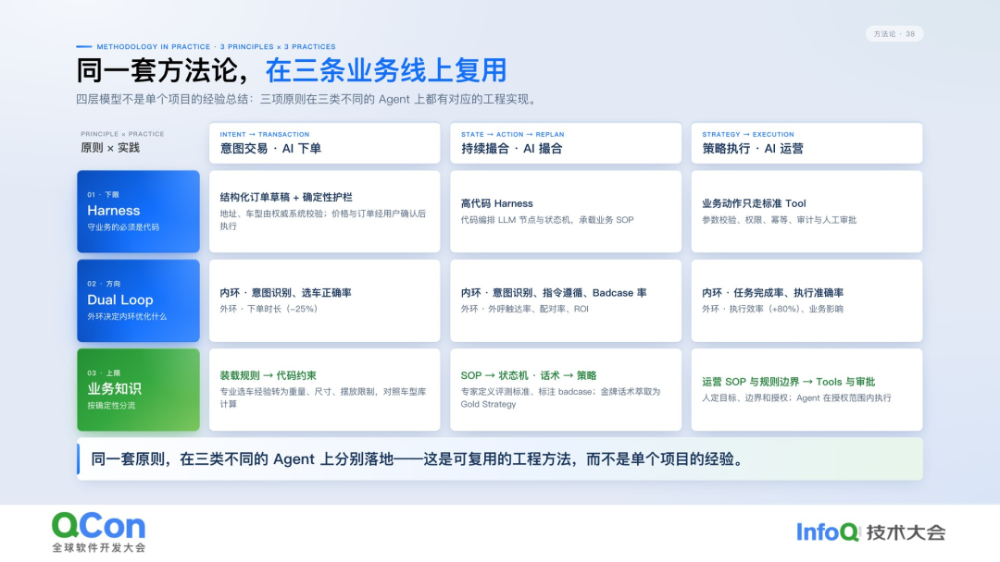

AI Agent 如何进入实时交易系统：货拉拉的三个实践与一套工程方法论
来源：微信公众号 归档日期：2026-11-21 抓取状态：成功 原文字符：9289｜配图：3 张
摘要速览
- 群同步待补摘要 · 微信公众号
核心内容
（待补充）
可执行启发
（待补充）
我的想法
（待补充）
原文沉淀
目录
- 引言
- 一、Agent 的价值，不在重做已有系统
- 二、意图交易：从表达意图到完成下单
- 三、持续撮合：一次匹配失败之后，系统如何继续推进
- 四、策略执行：人定策略，Agent 去操作系统
- 五、Agent 生产化四层模型
- Harness 决定下限：先分清两类约束
- Dual Loop 决定方向：外环发现内环看不见的问题
- 业务知识决定上限：按确定性分流
- 同一套方法，三条业务线
- 结语
- 作者简介
摘要： 当 AI Agent 从“回答问题”走向“直接改变业务状态”，真正的挑战不再是模型能不能思考，而是它能否在实时交易系统里可靠地行动，并带来可衡量的业务结果。本文基于货拉拉在意图交易（AI 下单）、持续撮合（司机 Agent / AI 撮合）和策略执行（AI 运营）三个场景的生产实践，讨论 Agent 与成熟的机器学习、运筹优化和交易系统如何分工，并提出一套面向生产系统的工程方法论——Agent 生产化四层模型：模型决定起点，Harness 决定下限，Dual Loop 决定方向，业务知识决定上限。
关键词： AI Agent；实时交易系统；Harness Engineering；上下文工程；Multi-Agent；评测闭环
引言
过去三年，行业为了让 Agent 真正完成任务投入了大量努力：模型更强，上下文更长，工具更多。但对一家业务公司来说，有一个问题却越来越难回答——Token 消耗了这么多，到底创造了什么新的业务价值？
在 QCon 现场，我做过一个小调研：正在做 Agent 的举手，几乎全场；能明确说出 Agent 带来了哪个业务指标提升的，举手的人明显少了很多。货拉拉也经历过同样的阶段。真正困难的，不是把 Agent 做出来，而是说清楚它到底拓展了什么。
我们后来形成的判断并不复杂：用 Agent 拓展系统能力的边界，而不是重做已有的能力。 下文先说明这个判断如何形成，再以三个已上线的生产实践作为证据，最后给出我据此提出的工程方法论——Agent 生产化四层模型。
一、Agent 的价值，不在重做已有系统
要回答“Agent 创造了什么新价值”，首先需要看清它正在进入什么样的系统。从 ChatGPT 到 Coding Agent，再到能连续运行数十小时的长时 Agent，AI 已经开始进入核心业务链路。应用边界也随之移动：从员工提效、业务辅助，到业务执行，再到直接参与交易。越往后，价值越高，风险也越大——辅助时，决策仍由人掌握；一旦 Agent 直接改变业务状态，幻觉和错误就会变成真实损失。
于是关注点也随之变化。过去关注的是“它能否正确回答、正确规划”；进入核心业务之后，还必须追问：它能否可靠地把事情做完。
可靠只是前提。反复尝试之后，我们开始把问题反过来：如果不用 Agent，这件事本来是否就能完成？什么场景才真正值得引入 Agent？最终收敛成三个标准：
| 标准 | 问题 |
|---|---|
| 新增能力 | 用了 Agent 之后，新增了什么以前做不到的能力？ |
| 新增结果 | 是否带来了新的、额外的业务结果？ |
| 成本可覆盖 | 收益能否覆盖 Token 成本与 Agent 带来的系统复杂度？ |
一句话：不用 Agent 就能解决的事，先问为什么还要 Agent。
按这个标准回看已有系统，边界其实一直很清晰。边界之内，是机器学习预测、运筹优化、业务规则、交易与履约系统——这些能力已经成熟，也应当继续由它们承担。边界之外，才是理解、规划、协调、按现场情况调整这类开放式工作：用户需要自行完成需求表达与下单决策，司机需要自行刷新抢单并规划一天的行程，运营需要自行在多个系统中完成策略配置并上线。过去，这些工作只能依赖人来完成。
因此，Agent 不应去替代已有系统已经做得很好的工作。预测问题交给机器学习，交易处理交给工程系统；Agent 真正应当承担的，是把原来只有人能完成的开放式工作，借助理解、规划与工具调用，转化为系统可持续完成目标的能力。

图 1：用 Agent 拓展系统能力边界，而不是重做已有能力
落到货拉拉，这个判断有明确的落点。实时交易链路已建设十多年，估价、下单、撮合、接单、履约、完单都已成熟；我们并不是用 Agent 重写这条链路，而是在其上拓展三类能力：估价与下单环节的意图交易，撮合与接单环节的持续撮合，以及作用于全链路的策略执行。下面分别说明。
二、意图交易：从表达意图到完成下单
对非物流行业的普通用户来说，完成一次货运下单，难点往往不在操作，而在专业判断。业务上要区分拉货还是搬家、整车还是零担；车型上，仅面包车就有微面、小面、中面、大面，还有冷藏、尾板、侧开门等附加需求。用户真正想完成的只是“把货运走”，但要把意图准确表达成一笔可执行的订单，仍需要具备一定的货运常识。
如果只是把表单填写换成自然语言交互，填写会更快，但专业门槛并没有消失——用户仍然需要知道该如何描述需求、选择何种服务。我们真正希望做到的，是让用户不必先成为半个物流专家：依靠意图理解与专业能力，直接完成意图下单。
要把一句开放意图变成一笔真实交易，仅靠对话并不够，系统分工必须首先清楚。用户负责表达需求，并确认地点、价格等关键信息；Agent 负责理解意图、记录已确认信息，在关键处追问；交易事实则必须由交易系统提供权威答案。模型会产生幻觉，用户描述也可能不准确：地址需要二次确认，车型因城市而异，价格只能来自计价系统。换言之，Agent 负责组织和理解已有能力，成熟系统负责验证与执行。
分工明确之后，下一个问题随之而来：模型本身是不确定的，怎样才能让它可靠地完成交易？我们的做法可以归纳为三个方面。
第一是先确定边界。更快、更准、更通用很难同时成立。在 ToC 场景里，响应时间几乎无法妥协——模型推理本身耗时不短，一旦过慢，留存和转化会直接受损。因此必须收窄任务范围，并按难度选择模型：简单任务使用小模型，选车这类需要深度推理的任务再使用更大模型。
边界确定之后，还需要有效管理上下文。最初，我们把完整对话历史直接传入模型；用户一旦修改需求或位置，模型就容易引用错误信息。后来改为结构化订单草稿：货物是什么、是否已确认；装货地是什么、是否已校验；价格与订单的实时状态如何。信息一旦变化，就重新向用户确认，而不是让模型自行从冗长历史中推断。
即便如此，开放理解仍不能直接落成交易动作，还需要确定性护栏：地址、价格等交易事实由系统确定；价格与订单经用户确认后才执行；动作受权限、状态机与幂等约束。三个方面合在一起，可以概括为一句话——让模型只在值得不确定的地方不确定。
到这里，交易链路已经具备基本闭环，但意图下单要真正可用，还缺少一项关键能力：专业选车。用户说“帮我搬一台双开门冰箱”——冰箱多大、哪辆车可以装载、是否建议直立运输，用户往往并不清楚。过去只能自行查询，或询问客服与司机；现在则由 Agent、专业规则与交易系统共同完成：LLM 识别品类并追问尺寸与特殊要求，经过验证的装载规则写成代码中的重量、尺寸与摆放约束，再对照本城市可选车型的载重与车厢尺寸排除无法装载的方案，最后向用户解释推荐理由。信息不足则继续追问，不做猜测。理解交给模型，约束交给代码，事实交给车型库。
当专业知识进入交易过程，业务结果也会随之变化：意图识别准确率达到 99%，选车正确率 93%，新客下单时长相比传统方式缩短 25%。Agent 的价值不只在于理解用户，更在于把原本依赖人的经验纳入系统，并转化为可度量的收益。
三、持续撮合：一次匹配失败之后，系统如何继续推进
下单解决的是“意图如何变成订单”；订单生成之后，真正困难的往往是撮合——尤其是一次匹配失败之后，系统是否还能继续朝目标推进。
先从司机侧看。货运司机通常通过抢单接单：不断刷新列表，找到愿意承接的订单后再抢单。但司机真正关心的并不是“下一单是什么”，而是“今天如何安排”——例如今天收入还差 300 元、最好顺路回家、晚上 10 点前收工。过去这个目标只能依赖司机反复筛选与判断；有了 Agent，可以把持续找单的任务连同目标一并委托出去。这里的变化，不只是多了一个助手，而是范式发生了改变：把一次性推荐，变成围绕目标的持续服务——从 Recommendation 走向 Delegation。
订单侧面临的是同一类缺口。一笔订单播单几分钟仍无人接单，就会进入长尾。过去主要依靠扩播，然后等待用户与司机自行联系协商；现在系统可以以成单为目标持续推进——观察状态，选择工具，再结合 AI 外呼等触达方式主动联系双方。这个过程有明确闭环：Observe → Decide → Act → Feedback → Replan，并在成功匹配、状态变化、时效到期或风险触发时进入终止态。持续行动很有价值，但没有终止条件的持续行动，本身就是风险。
要把这种持续推进落到生产，我们采用了 Multi-Agent 架构。不过关键不在 Agent 数量，而在边界如何划分：中间是撮合大脑，以业务目标判断当下策略与工具；两侧是状态与上下文管理，以及权限、Tool Contract、幂等、超时、审计、人工接管等确定性 Harness；下方是呼司机、呼用户等执行 Agent，以及 RTC、IM、Push 等通道；底层仍是推荐、预测、运筹、定价与交易系统。大模型上下文过长时，注意力会分散；一个 Agent 同时承担过多职责，表现往往变差。把每个 Agent 的闭环做小，反而更容易各自演进。
边界划分清楚之后，随之而来的一个常见疑问是：原有算法是否就不重要了？恰恰相反，它们更加重要。机器学习擅长的问题，大模型并不擅长；大模型擅长的是思考、规划、调用工具，并依据反馈决定下一步。于是分工变得清楚：ML/推荐负责接单概率与候选排序，OR/定价负责约束优化与资源分配，规则与交易系统守住硬约束和事实，Agent 负责判断时机、选择调用、执行动作、读取反馈并调整。Agent 不替代算法，而是把离散决策组织成连续行动。
落到一笔长尾订单上，典型路径如下：先用接单概率等模型找到更合适的司机，再选择外呼、IM 或音视频触达，收集接单意愿与报价，在合适时机与用户协商价格与反馈，最终推动成交。这里真正起作用的，不是触达次数是否足够多，而是能否将双侧反馈汇聚为可验证的协商方案。
持续撮合上线近一年来，配对率相对提升 12%，ROI 达到人工方式的 4 倍。后一个数字尤其重要：随着 Token 消耗增加，业务侧必然会关注成本。只看效果不看成本，很容易做出效果很好、但并不划算的系统。
四、策略执行：人定策略，Agent 去操作系统
如果说前两个实践拓展的是用户与司机侧的能力边界，那么运营侧也有一类长期被低估的开放式工作：策略确定之后，如何可靠地执行下去。
内部统计显示，超过 35% 的运营精力消耗在人工执行上。策略本身可能已经明确，但落地时仍需收集数据、跨系统圈选与配置，发布后再逐项校验——其中大量是机械性劳动。人既要做判断，又要做操作，后者反而成为最大消耗。
于是分工被重新界定：人确定目标、边界与授权；Agent 理解、拆解并调用工具；业务系统负责最终动作与事实。运营 Agent 的核心，是一个有状态的执行 Runtime——持续进行目标理解、任务规划、工具调用和结果校验。输入是经营目标与策略，输出则是可验证的执行结果。
正因为输出会真实改写业务，有一条规则不可妥协：所有业务动作都必须通过标准业务工具对接真实系统。 大模型会产生幻觉，而运营操作会产生真实影响，关键配置甚至可能影响整条业务运转。因此 Harness 层必须完成参数校验、边界与权限控制、审计和人工反馈；评测也不再看对话质量，而看任务完成率、执行准确率、效率、业务影响和人工介入率。对运营人员而言，工作方式会变为：表达一个意图，Agent 拆解为步骤并逐步执行，需要确认的环节进入审批。原来需要逐项操作的策略，由此变成一条可追踪、可审批的落地链路。
执行变得可靠之后，另一个问题几乎总会被提出：Agent 已经如此强大，能否直接决定经营策略？我们目前的答案是否定的，至少现阶段不行。
| 层级 | 分工 |
|---|---|
| 标准化执行 | Agent 在授权边界内执行 |
| 异常处理 | Agent 识别并升级，人工复核 |
| 策略建议 | Agent 辅助，人选择 |
| 经营决策 | 目标、预算、风险由人负责 |
从标准化执行到经营决策，责任与影响逐级放大。若让 Agent 直接决定整体运营策略，对业务的冲击将是巨大的。因此我们的原则很明确：往执行端走得越深，往决策端就越谨慎——先让执行能力可靠，再讨论更大的自主空间。
按这条边界推进，目前已完成 33 个以上运营 Agent；以人工执行效率为基准，执行效率提升 80%；在已统计范围内，配置错误等人工操作失误降至 0。下一步，才是在可靠执行的基础上，谨慎拓展到流程与决策辅助。
五、Agent 生产化四层模型
三个实践的用户、目标与交互方式都不同，但回头看，反复出现的其实是同一组问题：不确定的模型如何可靠行动？能力变好是否等于业务变好？企业私有知识应该落在系统的哪里？基于这些生产实践中的共性挑战，我提出了 Agent 生产化四层模型，作为把 Agent 从 Demo 带进生产的一套工程方法论。

图 2：模型决定起点，Harness 决定下限，Dual Loop 决定方向，业务知识决定上限
| 层 | 作用 | 原则 |
|---|---|---|
| 模型 | 起点 | 模型是所有团队的共同起点 |
| Harness | 下限 | 帮模型的设计成可删除，守业务的必须是代码 |
| Dual Loop | 方向 | 外环决定内环优化什么；Badcase 由业务归因定义 |
| 业务知识 | 上限 | 确定的进代码，标准进评测，打法进策略 |
模型能力大家几乎同时获得，真正拉开差距的是后面三层。Harness 决定系统能否上线——若最坏结果不可接受，系统便无法进入生产；Dual Loop 决定持续改进的方向；业务知识决定 Agent 最终能把业务做到多深。下面按这个顺序展开。
Harness 决定下限：先分清两类约束
先看下限。业界有两种观点：一种认为模型越强，Harness 终将消失；另一种认为 Harness 永不消失。我认为两者都对——因为讨论的并不是同一种约束。
帮模型的 Harness 补偿的是模型当下的不足：任务拆解、上下文组装、格式约束、补偿性重试。几年前，模型尚难以稳定输出 JSON，这类约束很重；模型变强后它会变薄，因此必须设计成可删除。守业务的 Harness 守住的是业务本身：SOP 是否遵循、价格是否交易事实、权限/幂等/审计、人工接管。它与模型强弱无关，定义的是模型与真实业务系统的边界，也决定模型能在多大范围内改变业务——这类约束不会消失，必须写成代码。
判定方法很简单：假设模型已经完美，这个约束是否仍然需要？ 如果需要，就是守业务的约束，必须进入代码。三个场景中分别是：下单中的地址与车型校验，撮合中承载 SOP 的状态机，运营中标准 Tool 的参数校验、权限、幂等、审计与审批。
分清两类约束之后，Harness 还有一个更隐蔽的作用：把确定性放在正确的位置。 AI 撮合的演进最能说明这一点。第一阶段完全 Agentic，模型自主规划如何撮合、如何沟通——结果是既难遵循 SOP，过程也不可度量，无法判断策略是否有效。第二阶段用工作流编排大节点、用状态机约束模型内部状态，流程遵循解决了，但节点间上下文很快变得重复冗余，无法按需供给。第三阶段改为高代码 Harness：用代码编排大模型节点与状态机，既能控制 SOP，又能按需组装上下文。确定性结构的第一价值，是让业务过程可度量；过程可度量，策略才能被优化。
这也意味着：在核心业务里，更自主不等于更好。 先让过程可遵循、可度量，再讨论扩大自主空间。帮模型的约束若一开始就与守业务的约束耦合在一起，模型变强后也难以干净移除——“可删除”必须提前设计。
Dual Loop 决定方向：外环发现内环看不见的问题
Harness 解决的是“能否上线、过程能否度量”；度量清楚之后，下一个问题是：优化究竟朝哪个方向推进。我们把这件事拆成两环。
内环是 Agent 能力闭环：意图识别、指令遵循、Badcase 率——把事情做对。外环是业务指标闭环：一级与二级业务指标——决定什么是正确的事。两者缺一不可，但优先级并不相同。
有一段时间，内环持续变好，配对转化率却在下降。根因不是对话能力，而是没有圈选到更高意向的司机。即便对话能力再强，若触达对象不正确，也难以完成转化。这类问题只关注内环永远看不见，必须由外环发现，并由业务归因定义 Badcase。方向正确之后，再把内环能力做强，业务结果才会随之提升。
方向正确之后，闭环速度就会决定能力迭代速度。我们用大模型本身加速两件事：一是 LLM-as-a-Judge，按专家标准规模化评估对话与任务，产出 Badcase 分布后再优化 Prompt 与策略，同时用人工抽查校准 Judge；二是金牌话术萃取，分析高绩效通话中的有效策略，回灌后再以外环业务指标验收。Judge 不是终审：由人校准，由业务指标验收。评测体系本身也需要被评测——Judge 的偏差会系统性地带偏优化方向。
业务知识决定上限：按确定性分流
即便 Harness 守住了下限，Dual Loop 校准了方向，Agent 在业务上能走多远，最终仍取决于它掌握了多少企业私有知识。装载适配、运输经验、人车货路网理解、策略是否有效——这些并不在公开语料中，大模型默认也不具备。只有工程化之后，Agent 才真正具备对业务产生较大影响的能力。
工程化的原则，是按确定性分流：
| 知识类型 | 去向 | 例子 |
|---|---|---|
| 确定的知识 | 代码与 Harness | 车型库与装载约束、撮合 SOP 状态机 |
| “什么是好” | 评测与指标 | 专家定义评测标准、标注 Badcase |
| 有效的打法 | 策略与话术 | 金牌话术萃取为策略，回灌 Agent |
写入 Prompt 并不等于完成了知识工程。业界常说“大模型 + Harness = Agent”；在核心业务里还要增加一项——业务知识。业务专家是 Agent 的老师和裁判：教它什么有效，并定义什么是好；产品与研发提供相应能力。业产研共同萃取出的知识质量，决定上限。
同一套方法，三条业务线
把三条原则放回前面的三个实践，会看到同一套方法在不同业务线上的具体落点：

图 3：同一套原则，在三类不同 Agent 上分别落地
| 原则 | 意图交易 · AI 下单 | 持续撮合 · AI 撮合 | 策略执行 · AI 运营 |
|---|---|---|---|
| Harness | 结构化订单草稿 + 确定性护栏 | 高代码 Harness：代码编排 LLM 节点与状态机 | 业务动作只走标准 Tool |
| Dual Loop | 内环：意图识别、选车正确率；外环：下单时长 | 内环：意图识别、指令遵循、Badcase 率；外环：配对转化率、配对率、ROI | 内环：任务完成率、执行准确率；外环：执行效率、业务影响 |
| 业务知识 | 装载规则 → 代码约束 | SOP → 状态机；话术 → 策略 | 运营 SOP 与规则边界 → Tools 与审批 |
用户不同、目标不同、交互不同，但原则能够各自落地——这正是我认为它应当称为“方法论”，而不是“项目经验总结”的原因。
最后需要划清适用范围。四层模型针对的是已有系统掌握业务事实的核心业务场景。若事实本身由 Agent 生成，或没有成熟系统可依托，“守业务的 Harness”和“事实权威”含义会不同，原则需要重新推导。
结语
回到开头的问题：Token 消耗了这么多，到底创造了什么新的业务价值？对我们而言，答案不是又上线了几个 Agent，而是系统能力边界被向外拓展——原来只能依赖人完成的开放式工作，开始变成可度量、可持续改进的系统能力。
AI 发展很快，不少技术人感到焦虑。我反而持乐观态度：通过 Agent 拓展的，不只是模型能力，而是技术能够解决业务问题的边界——也就是技术人能够解决的问题边界。
模型决定起点，Harness 决定下限，Dual Loop 决定方向，业务知识决定上限。希望这套 Agent 生产化四层模型，对正在将 Agent 带入生产的读者有所帮助。
作者简介
亓隆基（Laurence Qi），货拉拉技术总监，负责交易核心链路、货运中台、货运及企业业务的研发。曾任饿了么、阿里巴巴本地生活资深架构师，曾带领饿了么物流完成日运单从百万级到千万级的业务架构升级。目前关注AI Agent 在业务场景中的应用。
归属：[[02-输入/按主题/AI与效率/_index|AI与效率]]